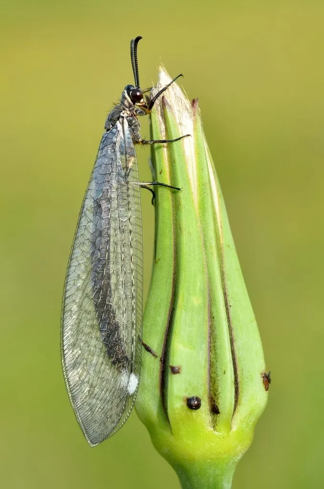

昆虫 · 动物界
蚁狮 Myrmeleon formicarius

蚁蛉的幼虫，在沙地上挖出漏斗形陷阱等待蚂蚁滑落，用大颚夹住猎物，成虫则像豆娘一样在空中捕食小虫。
- 分类
- 门节肢动物门纲昆虫纲目脉翅目科蚁蛉科属蚁蛉属
- 栖息环境
- 沙质土壤、干燥草地、林缘沙地及屋檐下的干沙堆
- 地理分布
- 欧洲、亚洲、非洲的温带和热带地区，中国多地有分布
- 保护级别
- IUCN 暂无评估；中国未列入国家重点保护名录
物种志
蚁狮是蚁蛉的幼虫，体长 1–2 厘米，身体宽扁呈椭圆形，头部较大，前方长着一对镰刀状的大颚，没有翅膀，腹部末端有毛；它全身覆沙土色，混在沙中很难被发现。成虫（蚁蛉）体长约 3–4 厘米，翅展 6–8 厘米，外形像豆娘，翅膀透明并有网状翅脉，触角细长，多在黄昏和夜间飞行。
蚁狮生活在沙质土壤、干燥草地和林缘沙地，它用身体旋转在沙中挖出漏斗状陷阱，自己藏在漏斗底部只露出大颚，当蚂蚁等小昆虫滑入陷阱时便迅速夹住猎物。它幼虫期较长，可达 1–2 年，经历三次蜕皮后结茧化蛹，最终羽化为成虫。蚁狮无毒，不会伤人，是观察昆虫行为的经典对象；成虫飞行能力较弱，寿命较短，主要任务是交配繁殖，目前未被列入国家重点保护名录。
形态与习性
- 食性幼虫捕食蚂蚁等小型昆虫，成虫捕食小型飞虫
- 体长幼虫 1–2 cm；成虫翅展 6–8 cm
- 寿命幼虫期 1–2 年，成虫寿命较短
- 繁殖卵生，幼虫三次蜕皮后结茧化蛹
- 活动节律成虫黄昏和夜间飞行，幼虫守候陷阱
- 防御无毒，受惊时钻入沙中躲避
趣味知识
- 蚁狮在沙地上挖出漏斗形陷阱，自己藏在底部等待蚂蚁滑落。
- 它的幼虫期可长达 1–2 年，而羽化后的成虫寿命很短。
- 蚁狮的大颚呈镰刀状，夹住猎物后会注入消化液再吸食。